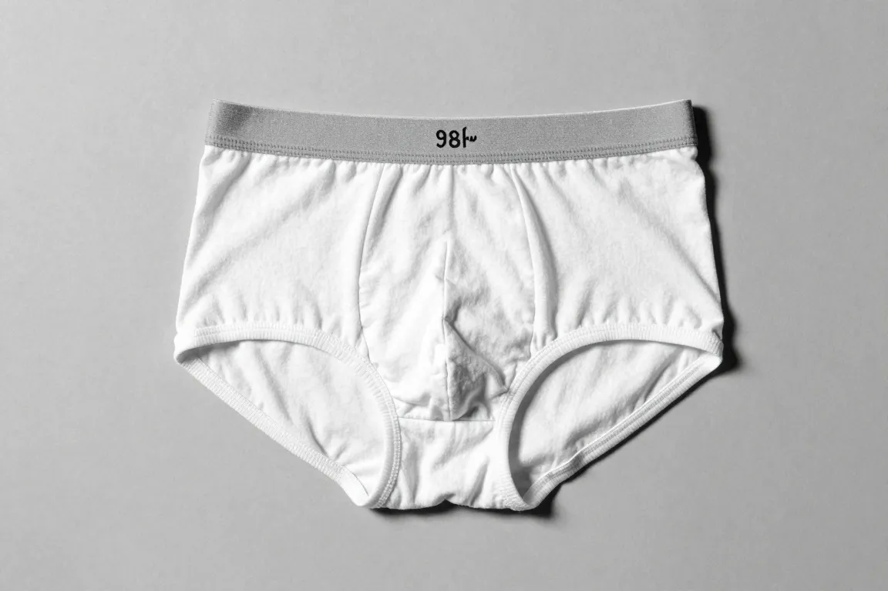

Plain cotton underwear with the name of a fashion designer on the waistband. In 1982 a fashion house put its name on a basic brief, and underwear became a branded, advertised object.

Core thesis
A basic garment gains value from its maker's name: the plain brief stays plain, and the label on the band carries the brand.
Design principles
Keep the garment plain: cotton jersey, a clean cut and a flat seam.
Weave the maker's name in large capitals into the elastic waistband, 3 to 4 cm deep.
Pick one tone for the band, and set the name in a second tone with high contrast.
Cut the brief from jersey with 5 per cent elastane for a close fit.
Sell the garment in a plain pack with the name on it and a clean photograph.
Extend the same band to boxer shorts, bras and other basics.
Keep the colour range small: white, grey, black and navy.